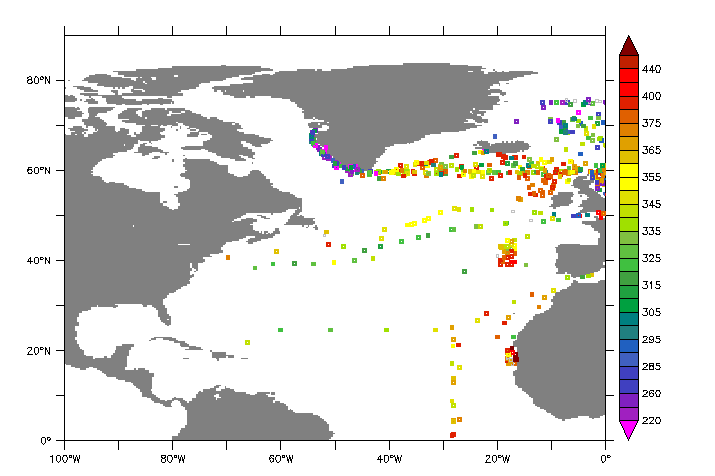

New Features/Enhancements:
- New plot style: Ribbon plots color a line by a variable using color palettes
- New qualifiers to control the variable type in NetCDF writes, e.g. SAVE/OUTTYPE=float var
- A MODULO operation is appliedwhen when longitude/latitude data is overlaid on PLOT/VS plots
- A new /MODULO qualifier is available for the curvilinear versions of the VECTOR and POLYGON commands
- Can CTRL-C out of a read from NetCDF or OPeNDAP files.
- National borders are updated for the GO land and GO land_detail scripts.
- The default file type when opening datasets is NetCDF/OPeNDAP.
Bug fixes/ Minor changes:
- A bug is fixed, when the set of open files contains large numbers of variables
- Bug with IF `condition` THEN EXIT is fixed
- Bug when running in -script mode, using EXIT/SCRIPT
- A bug in @XACT regridding is fixed
- Bug with netCDF variable having scale_factor attributes, but not add_offset attributes
- Bug when appending to a scaled variable in a NetCDF file
- Bug handling a _FillValue attribute on a coordinate axis variable
- Enhancement to descriptor file definition
- A bug is fixed where an expression reported a time error
- Improvements have been made when defining grids for variables in netCDF files
- Ferret now recognizes the _CoordinateAxisTypes attribute from the Common Data Model (CDA)
- New NOTE: if a NetCDF or OPeNDAP dataset has monotonically-decreasing coordinate data
- Bug fixed, in -gif mode, stray files left after exit
- Correction to the xml output of grids that have a string dimension
- Handling labels on axes with many digits in label
- Multi-line labels drawn using an ASCII font keep the font from line to line
- Ribbon plots: Lines colored by a variable using colors from a color palette.
The alias RIBBON stands for PLOT/RIBBON. Add the /RIBBON qualifier to line plot or PLOT/VS "versus" plot command, and give an extra argument, the "color-by" variable. For a line plot without the /VS qualifier, the second variable on the command line will be the "color-by" variable. For PLOT/VS plots, the third variable on the command line will be used to color the points and/or line.
Try the new demo script: yes? go ribbon_plot_demo.jnl
For instance,
yes? RIBBON/THICK/Y=0/L=6 sst, speh

This is particularly useful for coloring large numbers of points by a value - say scattered observational data as an alternative to the slower POLYGON command.
yes? go basemap x=260:360 y=0:90 20
yes? plot/vs/over/nolab/ribbon/thick/siz=0.08/sym=17/key/lev=v lon, lat, fco2_rec

The type may be any of the NetCDF variable types: /OUTTYPE=DOUBLE,FLOAT,INT,SHORT,or BYTE. SET LIST/OUTTYPE is a persistent setting, which remains in effect during the Ferret session or until canceled or reset with another SET LIST command.
SAVE/OUTTYPE= will override any other settings, for this SAVE command only. Individual variables may also be given an output type, with the existing SET VAR/OUTTYPE qualifier.
The default type for netCDF writing is the type of the variable; if it is a file variable it retains the type it had in the original dataset. If it is a user defined variable its default type is DOUBLE.
- New qualifiers are added for controlling variable type in NetCDF writes:
- SET LIST/OUTTYPE=
- CANCEL LIST/OUTTYPE=
- SAVE/OUTTYPE=
-
Automatic MODULO for longitudes overlaid on PLOT/VS plots.
If the variables that represent the scattered locations have units of Longitude and Latitude, and if they are overlaid on a plot with axes that also have units of longitude and latitude, Ferret automatically applies a modulo transformation. So for instance in the plot above, we would not have to worry about whether the scattered lon values are represented as degrees in -180:180 or 0:360, so long as they have longitude units.
- Automatic MODULO for longitudes on overlaid on PLOT/VS plots.
If the variables that represent the scattered locations have units of Longitude and Latitude, and if they are overlaid on a plot with axes that also have units of longitude and latitude, Ferret automatically applies a modulo transformation. So for instance in the plot above, we would not have to worry about whether the scattered lon values are represented as degrees in -180:180 or 0:360.
- A /MODULO qualifier is added for the curvilinear versions of the VECTOR and POLYGON commands.
These work in the same way as the /MODULO qualifier that'S already available for SHADE and CONTOUR.
- We have new control to exit from reading data from a NetCDF or OPeNDAP file.
If a command has asked to load data and the request was too large, or the data server too slow, then one can hit CTRL-C during the read operation. Ferret will now return to the command line, with an error message saying what the dataset was and which variable it was reading:
yes? load mld ! Here hit a Ctrl-C **TMAP ERR: Reading variable mld, interrupted from command line Data set: http://data1.gfdl.noaa.gov:8080/thredds/dodsC/CM2.1R_ECDA_v3.1_1960.r1i1p1.dc_Omon** INTERRUPTED! **
- International borders are added for the country South Sudan to the datasets that are used by "go land" and "go land_detail". A new resource for longitude/latitude data for the outlines of political boundaries is described in the FAQ: Where can I get detailed coastlines and political borders to overlay on my plots?
- The default file type when opening datasets is NetCDF/OPeNDAP. Previously the default file type was a descriptor file. The impact of this change is that descriptor files must be named with the file type .des in order to be recognized. Either SET DATA or USE will work to open a descriptor dataset.
Bug fixes:
- A bug is fixed, when the set of open files contains large numbers of variables. (see the thread under http://www.pmel.noaa.gov/maillists/tmap/ferret_users/fu_2012/msg00449.html). If there are more than 1000 variables total, in all the files that are open, the bug caused information that Ferret stores for the variables and their datasets and grids to be lost. This is fixed. The program limit is 2000 file variables plus 2000 user-defined variables.
- Bug with IF `condition` THEN EXIT is fixed
For example,
! test_exit.jnllet test = 1if `test` then exitsay Should have already exitedexit
Previously the above did not exit as expected. Now Ferret does exit before printing the line.
- When running in -script mode, EXIT/SCRIPT returned not to the calling script, but two levels up in the stack of calling scripts. This is fixed.
- A bug in @XACT regridding is fixed. As discussed in this thread, http://www.pmel.noaa.gov/maillists/tmap/ferret_users/fu_2012/msg00477.html, for some axes, the @XACT regridding did not return a result where it should. The transformation now works correctly.
- If variables in a netCDF dataset have scale_factor attributes, but does not have add_offset attributes, the data were not scaled correctly. This has been fixed. It is allowed to have scaled variables where only one of the attributes scale_factor and add_offset are present.
- When appending to a scaled variable in a NetCDF file, previously the appended data was not scaled properly. This is fixed.
- If there is a _FillValue attribute on a coordinate axis variable, previously Ferret was unable to write a subset of the dataset. In general, when writing a file variable, Ferret writes out the attributes from the input file. Having a _FillValue attribute on a coordinate variable is not part of the CF standard, so now Ferret does not write that attribute when making the subset, and the subset is successfully written.
- Enhancement to descriptor file definition: One can define a descriptor file from a set of stepfiles with a common name and numeric extensions such as filename.001, filename.002, ... by giving the base file name and the number of files to include. See CREATING-A-MULTI-FILE-NETCDF-DATA-SET for the form of these files. This has been extended to allow for either 3- or 4-digit file extensions.
- A bug is fixed where an expression reported a time error. An expression defined with several variables, one of which is defined in terms of a time region
yes? use monthly_navy_windsyes? let a = 2yes? list/i=1/j=1 a*uwnd[t=1-jan-1983:1-jan-1984@ave] VARIABLE : A*UWND[T=1-JAN-1983:1-JAN-1984@AVE] FILENAME : monthly_navy_winds.cdf FILEPATH : /home/atw/ferret/exe/x86_64/rhel6/ferret-6.8.2/fer_dsets/data/ LONGITUDE: 20E LATITUDE : 90S 4.059yes? let b = a*uwndyes? list/i=1/j=1 b[t=1-jan-1983:1-jan-1984@ave] **ERROR: illegal limits: B does not exist at T=01-JAN-198300:00:00:01-JAN-1984 00:00:0@AVE Axis extremes are T=01-JAN-1982 14:45:01-JAN-1993 08:45
This is fixed.
- Improvements are made when defining grids for variables in netCDF files when the coordinate axes do not have attributes that define their orientation. In Ferret v6.7 (version 7.7 release notes, item 7) we stopped relying on axis names for determining their orientation. In some instances the implementation of this gave unsatisfactory results. This is improved in Ferret v6.84. The default ordering of XYZTEF is used where possible in defining the grids for variables in such files.
- Ferret now recognizes the _CoordinateAxisTypes attribute from the Common Data Model (CDA) and uses its value when determining the orientation of coordinates in netCDF. It applies the _CoordinateZisPositive also from the CDA to determine whether the axis is a Height or Depth axis.
- New NOTE: If a NetCDF or OPeNDAP dataset has monotonically-decreasing coordinate data, Ferret has always reversed coordinates and treated data on associated grids accordingly. See the description here:
NETCDF-DATAThis behavior reversing axes and associated data is not changed, however starting with Ferret v6.84, Ferret issues a NOTE in this case:
yes? use reversed_axes.cdf *** NOTE: Axis coordinates are decreasing-ordered. Reversing ordering for axis Y1010_REV
- When running in ferret -gif mode, Ferret v6.82 left stray .gif files sitting around when it finished. This is fixed. The new command SET GIFFILE works to name the gif file in both
ferret -gif and ferret -batch gif_file_name.gif modes. Use a complete pathname for SET GIFFILE:> ferret -gif yes? SET GIFFILE "/home/users/ansley/images/output.gif" yes? plot the_var yes? frame/file= "/home/users/ansley/images/output.gif"
The filename specified in SET GIFFILE does not have to be the same one used by the FRAME command.
- We have made a correction to the xml output of grids that have a string dimension (relevant for Ferret running behind LAS).
- If the vertical axis labels need a lot of digits, the label for the y axis may run off the page.
If this is the case, then set the new mode
yes? SET MODE shrink_ylab
Then the vertical axis label will be automatically made smaller to fit on the page.
yes? PLOT/I=1:15/TITLE="@ASInverse_of<nl>Variable_i" 1./i